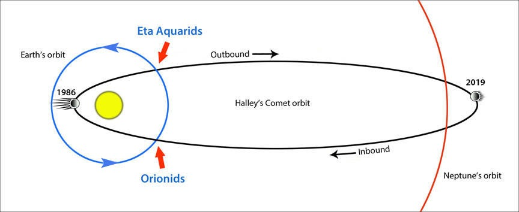

Conic Sections and Orbits
Conic Sections and Orbits
In Conic Sections Introduction, it has been shown that the trajectory gravitational bodies make around other, more massive bodies is one of the four conic sections. That is assuming it is a two body problem, bare in mind. This relationship holds due to energy considerations of the massive bodies, but that is beyong the scope of what is discussed here.
The eccentricity of an orbit is an interesting property of its shape. You can think of it like its 'squishyness'. The orbit is a circle when the eccentricity is zero, think of it as not being squished at all. The orbit is an elipse when the eccentricity is between zero and one. When it is exactly equal to one, it is a parabola. And finally when the eccentricity is greater than one, it is a hyperbola. Thus showing how this one property bring forth all the possible orbits which are too conic sections.
The Importance of Conic sections in Relation to Orbits
Halley's comet, one of the most promiment sights appearing to human eyes across various points in our history, follows an elipitical orbit with a relatively high eccentricity. It is because we know of its shape (as well as its velocity), we are able to predict when it will next grace the Earth. If it were a hyperbola for instance, we would see it once and then never again. But because of its elipitcal nature we repeatedly see it and with the advances of modern astronomy at predictable times.
Diagram showing the true shape of the orbit of Halley's Comet
Illustration of the comet on the Bayeux Tapestry, England from the 11th century.
Conic sections are fundamentally linked to orbits every way, and by examining the mathematical properties of the former we can make real-world observations and predictions about the latter. This doesn't just benefit astrophysicists, but is integral to every day life. For example in the prediction of lunar cycles, with the aid of the geometry we have been discussing, the exact date of Easter Sunday can be known much further in advance than it could in a past long before Kepler.
Research links
- Calculus Textbook Link to textbook